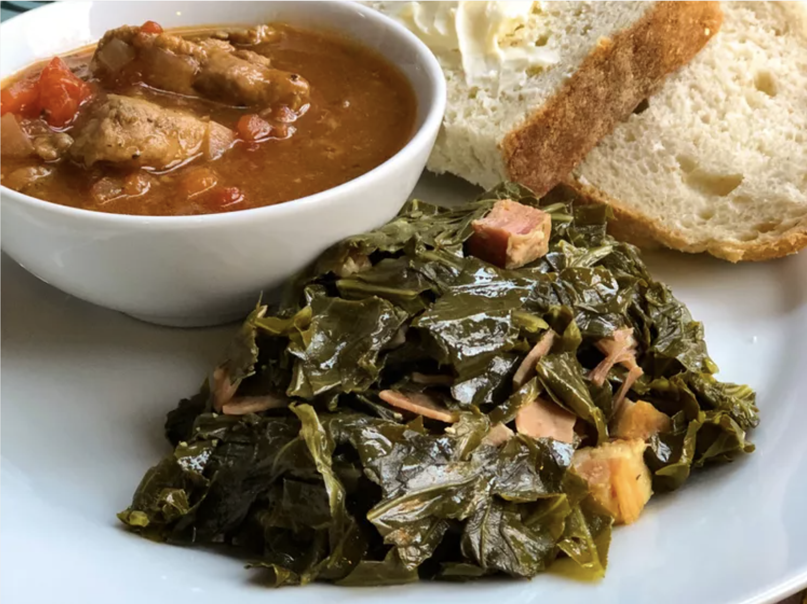

Instant Pot Collard Greens

Description
Quick Southern-style collard greens made in your Instant Pot.
Ingredients
1 bunch collard greens
4 thick slices bacon, cut into 1-inch pieces
4 cups water
2 tablespoons white vinegar
salt to taste